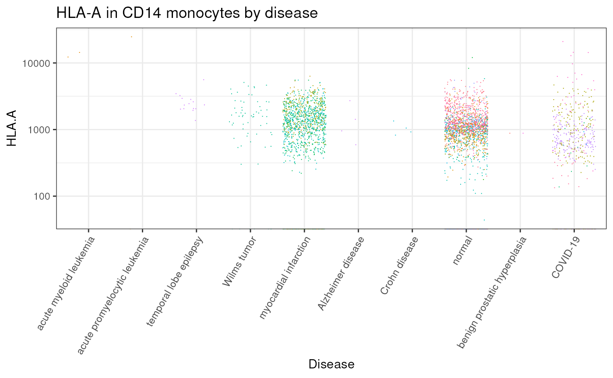
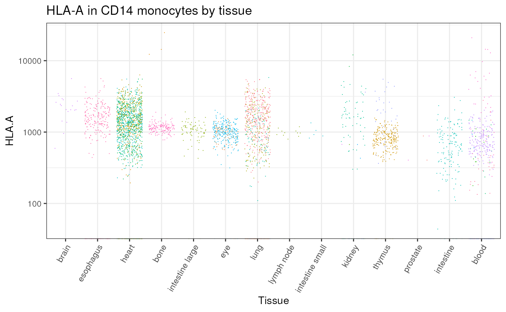
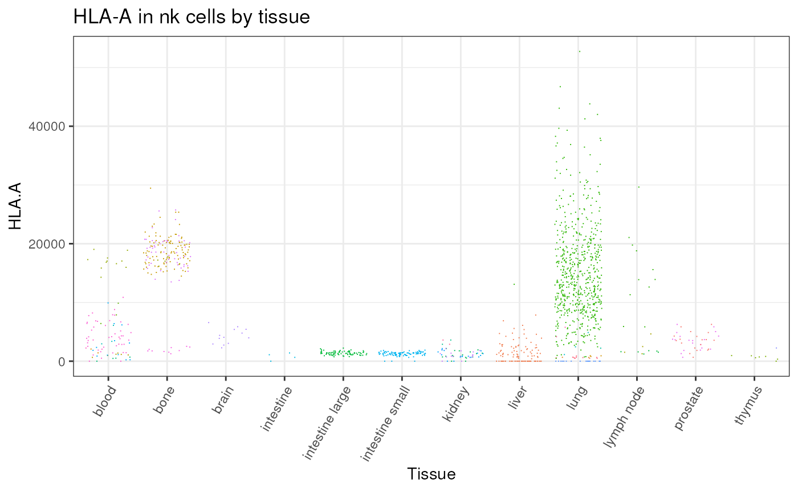

CuratedAtlasQuery is a query interface that allow the
programmatic exploration and retrieval of the harmonised, curated and
reannotated CELLxGENE single-cell human cell atlas. Data can be
retrieved at cell, sample, or dataset levels based on filtering
criteria.
Harmonised data is stored in the ARDC Nectar Research Cloud, and most
CuratedAtlasQuery functions interact with Nectar via web
requests, so a network connection is required for most
functionality.


Query interface
Installation
devtools::install_github("stemangiola/CuratedAtlasQueryR")Load and explore the metadata
Load the metadata
# Note: in real applications you should use the default value of remote_url
metadata <- get_metadata(remote_url = METADATA_URL)
metadata
#> # Source: table</github/home/.cache/R/CuratedAtlasQueryR/metadata.0.2.3.parquet> [?? x 56]
#> # Database: DuckDB 0.7.1 [unknown@Linux 5.15.0-1041-azure:R 4.2.3/:memory:]
#> cell_ sample_ cell_type cell_type_harmonised confidence_class
#> <chr> <chr> <chr> <chr> <dbl>
#> 1 TTATGCTAGGGTGTTG_12 039c558c… mature N… immune_unclassified 5
#> 2 GCTTGAACATGGTCTA_12 039c558c… mature N… cd8 tem 3
#> 3 GTCATTTGTGCACCAC_12 039c558c… mature N… immune_unclassified 5
#> 4 AAGGAGCGTATTCTCT_12 039c558c… mature N… immune_unclassified 5
#> 5 ATTGGACTCCGTACAA_12 039c558c… mature N… immune_unclassified 5
#> 6 CTCGTCAAGTACGTTC_12 039c558c… mature N… immune_unclassified 5
#> 7 CGTCTACTCTCTAAGG_11 07e64957… mature N… immune_unclassified 5
#> 8 ACGATCAAGGTGGTTG_15 17640030… mature N… immune_unclassified 5
#> 9 TCATACTTCCGCACGA_15 17640030… mature N… immune_unclassified 5
#> 10 GAGACCCTCCCTTCCC_15 17640030… mature N… immune_unclassified 5
#> # ℹ more rows
#> # ℹ 51 more variables: cell_annotation_azimuth_l2 <chr>,
#> # cell_annotation_blueprint_singler <chr>,
#> # cell_annotation_monaco_singler <chr>, sample_id_db <chr>,
#> # `_sample_name` <chr>, assay <chr>, assay_ontology_term_id <chr>,
#> # file_id_db <chr>, cell_type_ontology_term_id <chr>,
#> # development_stage <chr>, development_stage_ontology_term_id <chr>, …The metadata variable can then be re-used for all
subsequent queries.
Explore the tissue
metadata |>
dplyr::distinct(tissue, file_id)
#> # Source: SQL [?? x 2]
#> # Database: DuckDB 0.7.1 [unknown@Linux 5.15.0-1041-azure:R 4.2.3/:memory:]
#> tissue file_id
#> <chr> <chr>
#> 1 transition zone of prostate d0a2b5d0-ded0-4ed0-af22-a6dde2799513
#> 2 peripheral zone of prostate d0a2b5d0-ded0-4ed0-af22-a6dde2799513
#> 3 heart left ventricle 5775c8d8-e37e-40cd-94f4-8e78b05ca331
#> 4 lung f0691786-c20a-4727-8d34-9db28b418c4e
#> 5 blood f0691786-c20a-4727-8d34-9db28b418c4e
#> 6 blood 60ba353d-236a-4b91-a0a2-a74669c2b55e
#> 7 bone marrow 1ff5cbda-4d41-4f50-8c7e-cbe4a90e38db
#> 8 kidney 63523aa3-0d04-4fc6-ac59-5cadd3e73a14
#> 9 renal medulla 63523aa3-0d04-4fc6-ac59-5cadd3e73a14
#> 10 cortex of kidney 63523aa3-0d04-4fc6-ac59-5cadd3e73a14
#> # ℹ more rowsDownload single-cell RNA sequencing counts
Query raw counts
single_cell_counts =
metadata |>
dplyr::filter(
ethnicity == "African" &
stringr::str_like(assay, "%10x%") &
tissue == "lung parenchyma" &
stringr::str_like(cell_type, "%CD4%")
) |>
get_single_cell_experiment()
#> ℹ Realising metadata.
#> ℹ Synchronising files
#> ℹ Downloading 0 files, totalling 0 GB
#> ℹ Reading files.
#> ℹ Compiling Single Cell Experiment.
single_cell_counts
#> class: SingleCellExperiment
#> dim: 36229 1571
#> metadata(0):
#> assays(1): counts
#> rownames(36229): A1BG A1BG-AS1 ... ZZEF1 ZZZ3
#> rowData names(0):
#> colnames(1571): ACACCAAAGCCACCTG_SC18_1 TCAGCTCCAGACAAGC_SC18_1 ...
#> CAGCATAAGCTAACAA_F02607_1 AAGGAGCGTATAATGG_F02607_1
#> colData names(56): sample_ cell_type ... updated_at_y original_cell_id
#> reducedDimNames(0):
#> mainExpName: NULL
#> altExpNames(0):Query counts scaled per million
This is helpful if just few genes are of interest, as they can be compared across samples.
single_cell_counts =
metadata |>
dplyr::filter(
ethnicity == "African" &
stringr::str_like(assay, "%10x%") &
tissue == "lung parenchyma" &
stringr::str_like(cell_type, "%CD4%")
) |>
get_single_cell_experiment(assays = "cpm")
#> ℹ Realising metadata.
#> ℹ Synchronising files
#> ℹ Downloading 0 files, totalling 0 GB
#> ℹ Reading files.
#> ℹ Compiling Single Cell Experiment.
single_cell_counts
#> class: SingleCellExperiment
#> dim: 36229 1571
#> metadata(0):
#> assays(1): cpm
#> rownames(36229): A1BG A1BG-AS1 ... ZZEF1 ZZZ3
#> rowData names(0):
#> colnames(1571): ACACCAAAGCCACCTG_SC18_1 TCAGCTCCAGACAAGC_SC18_1 ...
#> CAGCATAAGCTAACAA_F02607_1 AAGGAGCGTATAATGG_F02607_1
#> colData names(56): sample_ cell_type ... updated_at_y original_cell_id
#> reducedDimNames(0):
#> mainExpName: NULL
#> altExpNames(0):Extract only a subset of genes
single_cell_counts =
metadata |>
dplyr::filter(
ethnicity == "African" &
stringr::str_like(assay, "%10x%") &
tissue == "lung parenchyma" &
stringr::str_like(cell_type, "%CD4%")
) |>
get_single_cell_experiment(assays = "cpm", features = "PUM1")
#> ℹ Realising metadata.
#> ℹ Synchronising files
#> ℹ Downloading 0 files, totalling 0 GB
#> ℹ Reading files.
#> ℹ Compiling Single Cell Experiment.
single_cell_counts
#> class: SingleCellExperiment
#> dim: 1 1571
#> metadata(0):
#> assays(1): cpm
#> rownames(1): PUM1
#> rowData names(0):
#> colnames(1571): ACACCAAAGCCACCTG_SC18_1 TCAGCTCCAGACAAGC_SC18_1 ...
#> CAGCATAAGCTAACAA_F02607_1 AAGGAGCGTATAATGG_F02607_1
#> colData names(56): sample_ cell_type ... updated_at_y original_cell_id
#> reducedDimNames(0):
#> mainExpName: NULL
#> altExpNames(0):Extract the counts as a Seurat object
This convert the H5 SingleCellExperiment to Seurat so it might take long time and occupy a lot of memory depending on how many cells you are requesting.
single_cell_counts_seurat =
metadata |>
dplyr::filter(
ethnicity == "African" &
stringr::str_like(assay, "%10x%") &
tissue == "lung parenchyma" &
stringr::str_like(cell_type, "%CD4%")
) |>
get_seurat()
#> ℹ Realising metadata.
#> ℹ Synchronising files
#> ℹ Downloading 0 files, totalling 0 GB
#> ℹ Reading files.
#> ℹ Compiling Single Cell Experiment.
single_cell_counts_seurat
#> An object of class Seurat
#> 36229 features across 1571 samples within 1 assay
#> Active assay: originalexp (36229 features, 0 variable features)Save your SingleCellExperiment
The returned SingleCellExperiment can be saved with two
modalities, as .rds or as HDF5.
Saving as RDS (fast saving, slow reading)
Saving as .rds has the advantage of being fast, andd the
.rds file occupies very little disk space as it only stores
the links to the files in your cache.
However it has the disadvantage that for big
SingleCellExperiment objects, which merge a lot of HDF5
from your get_single_cell_experiment, the display and
manipulation is going to be slow. In addition, an .rds
saved in this way is not portable: you will not be able to share it with
other users.
single_cell_counts |> saveRDS("single_cell_counts.rds")Saving as HDF5 (slow saving, fast reading)
Saving as .hdf5 executes any computation on the
SingleCellExperiment and writes it to disk as a monolithic
HDF5. Once this is done, operations on the
SingleCellExperiment will be comparatively very fast. The
resulting .hdf5 file will also be totally portable and
sharable.
However this .hdf5 has the disadvantage of being larger
than the corresponding .rds as it includes a copy of the
count information, and the saving process is going to be slow for large
objects.
single_cell_counts |> HDF5Array::saveHDF5SummarizedExperiment("single_cell_counts", replace = TRUE)Visualise gene transcription
We can gather all CD14 monocytes cells and plot the distribution of HLA-A across all tissues
suppressPackageStartupMessages({
library(ggplot2)
})
# Plots with styling
counts <- metadata |>
# Filter and subset
dplyr::filter(cell_type_harmonised == "cd14 mono") |>
dplyr::filter(file_id_db != "c5a05f23f9784a3be3bfa651198a48eb") |>
# Get counts per million for HCA-A gene
get_single_cell_experiment(assays = "cpm", features = "HLA-A") |>
suppressMessages() |>
# Add feature to table
tidySingleCellExperiment::join_features("HLA-A", shape = "wide") |>
# Rank x axis
tibble::as_tibble()
# Plot by disease
counts |>
dplyr::with_groups(disease, ~ .x |> dplyr::mutate(median_count = median(`HLA.A`, rm.na=TRUE))) |>
# Plot
ggplot(aes(forcats::fct_reorder(disease, median_count,.desc = TRUE), `HLA.A`,color = file_id)) +
geom_jitter(shape=".") +
# Style
guides(color="none") +
scale_y_log10() +
theme_bw() +
theme(axis.text.x = element_text(angle = 60, vjust = 1, hjust = 1)) +
xlab("Disease") +
ggtitle("HLA-A in CD14 monocytes by disease")
#> Warning: Transformation introduced infinite values in continuous y-axis

# Plot by tissue
counts |>
dplyr::with_groups(tissue_harmonised, ~ .x |> dplyr::mutate(median_count = median(`HLA.A`, rm.na=TRUE))) |>
# Plot
ggplot(aes(forcats::fct_reorder(tissue_harmonised, median_count,.desc = TRUE), `HLA.A`,color = file_id)) +
geom_jitter(shape=".") +
# Style
guides(color="none") +
scale_y_log10() +
theme_bw() +
theme(axis.text.x = element_text(angle = 60, vjust = 1, hjust = 1)) +
xlab("Tissue") +
ggtitle("HLA-A in CD14 monocytes by tissue") +
theme(legend.position = "none")
#> Warning: Transformation introduced infinite values in continuous y-axis
metadata |>
# Filter and subset
dplyr::filter(cell_type_harmonised=="nk") |>
# Get counts per million for HCA-A gene
get_single_cell_experiment(assays = "cpm", features = "HLA-A") |>
suppressMessages() |>
# Plot
tidySingleCellExperiment::join_features("HLA-A", shape = "wide") |>
ggplot(aes(tissue_harmonised, `HLA.A`, color = file_id)) +
theme_bw() +
theme(
axis.text.x = element_text(angle = 60, vjust = 1, hjust = 1),
legend.position = "none"
) +
geom_jitter(shape=".") +
xlab("Tissue") +
ggtitle("HLA-A in nk cells by tissue")
Obtain Unharmonised Metadata
Various metadata fields are not common between datasets, so
it does not make sense for these to live in the main metadata table.
However, we can obtain it using the
get_unharmonised_metadata() function. This function returns
a data frame with one row per dataset, including the
unharmonised column which contains unharmnised metadata as
a nested data frame.
harmonised <- metadata |> dplyr::filter(tissue == "kidney blood vessel")
unharmonised <- get_unharmonised_metadata(harmonised)
unharmonised
#> # A tibble: 4 × 2
#> file_id unharmonised
#> <chr> <list>
#> 1 63523aa3-0d04-4fc6-ac59-5cadd3e73a14 <tbl_dck_[,17]>
#> 2 8fee7b82-178b-4c04-bf23-04689415690d <tbl_dck_[,12]>
#> 3 dc9d8cdd-29ee-4c44-830c-6559cb3d0af6 <tbl_dck_[,14]>
#> 4 f7e94dbb-8638-4616-aaf9-16e2212c369f <tbl_dck_[,14]>Notice that the columns differ between each dataset’s data frame:
dplyr::pull(unharmonised) |> head(2)
#> [[1]]
#> # Source: SQL [?? x 17]
#> # Database: DuckDB 0.7.1 [unknown@Linux 5.15.0-1041-azure:R 4.2.3/:memory:]
#> cell_ file_id donor_age donor_uuid library_uuid mapped_reference_ann…¹
#> <chr> <chr> <chr> <chr> <chr> <chr>
#> 1 4602STDY701… 63523a… 27 months a8536b6a-… 5ddaeac7-0f… GENCODE 24
#> 2 4602STDY701… 63523a… 27 months a8536b6a-… 5ddaeac7-0f… GENCODE 24
#> 3 4602STDY701… 63523a… 27 months a8536b6a-… 5ddaeac7-0f… GENCODE 24
#> 4 4602STDY701… 63523a… 27 months a8536b6a-… 5ddaeac7-0f… GENCODE 24
#> 5 4602STDY701… 63523a… 27 months a8536b6a-… 5ddaeac7-0f… GENCODE 24
#> 6 4602STDY701… 63523a… 27 months a8536b6a-… 5ddaeac7-0f… GENCODE 24
#> 7 4602STDY701… 63523a… 27 months a8536b6a-… 5ddaeac7-0f… GENCODE 24
#> 8 4602STDY701… 63523a… 27 months a8536b6a-… 5ddaeac7-0f… GENCODE 24
#> 9 4602STDY709… 63523a… 19 months 46318131-… 67178571-39… GENCODE 24
#> 10 4602STDY701… 63523a… 27 months a8536b6a-… 5ddaeac7-0f… GENCODE 24
#> # ℹ more rows
#> # ℹ abbreviated name: ¹mapped_reference_annotation
#> # ℹ 11 more variables: sample_uuid <chr>, suspension_type <chr>,
#> # suspension_uuid <chr>, author_cell_type <chr>, cell_state <chr>,
#> # reported_diseases <chr>, Short_Sample <chr>, Project <chr>,
#> # Experiment <chr>, compartment <chr>, broad_celltype <chr>
#>
#> [[2]]
#> # Source: SQL [?? x 12]
#> # Database: DuckDB 0.7.1 [unknown@Linux 5.15.0-1041-azure:R 4.2.3/:memory:]
#> cell_ file_id orig.ident nCount_RNA nFeature_RNA seurat_clusters Project
#> <chr> <chr> <chr> <dbl> <chr> <chr> <chr>
#> 1 1069 8fee7b82-17… 4602STDY7… 16082 3997 25 Experi…
#> 2 1214 8fee7b82-17… 4602STDY7… 1037 606 25 Experi…
#> 3 2583 8fee7b82-17… 4602STDY7… 3028 1361 25 Experi…
#> 4 2655 8fee7b82-17… 4602STDY7… 1605 859 25 Experi…
#> 5 3609 8fee7b82-17… 4602STDY7… 1144 682 25 Experi…
#> 6 3624 8fee7b82-17… 4602STDY7… 1874 963 25 Experi…
#> 7 3946 8fee7b82-17… 4602STDY7… 1296 755 25 Experi…
#> 8 5163 8fee7b82-17… 4602STDY7… 11417 3255 25 Experi…
#> 9 5446 8fee7b82-17… 4602STDY7… 1769 946 19 Experi…
#> 10 6275 8fee7b82-17… 4602STDY7… 3750 1559 25 Experi…
#> # ℹ more rows
#> # ℹ 5 more variables: donor_id <chr>, compartment <chr>, broad_celltype <chr>,
#> # author_cell_type <chr>, Sample <chr>Cell metadata
Dataset-specific columns (definitions available at cellxgene.cziscience.com)
cell_count, collection_id,
created_at.x, created_at.y,
dataset_deployments, dataset_id,
file_id, filename, filetype,
is_primary_data.y, is_valid,
linked_genesets, mean_genes_per_cell,
name, published, published_at,
revised_at, revision, s3_uri,
schema_version, tombstone,
updated_at.x, updated_at.y,
user_submitted, x_normalization
Sample-specific columns (definitions available at cellxgene.cziscience.com)
sample_, sample_name,
age_days, assay,
assay_ontology_term_id, development_stage,
development_stage_ontology_term_id, ethnicity,
ethnicity_ontology_term_id, experiment___,
organism, organism_ontology_term_id,
sample_placeholder, sex,
sex_ontology_term_id, tissue,
tissue_harmonised, tissue_ontology_term_id,
disease, disease_ontology_term_id,
is_primary_data.x
Cell-specific columns (definitions available at cellxgene.cziscience.com)
cell_, cell_type,
cell_type_ontology_term_idm,
cell_type_harmonised, confidence_class,
cell_annotation_azimuth_l2,
cell_annotation_blueprint_singler
Through harmonisation and curation we introduced custom column, not present in the original CELLxGENE metadata
-
tissue_harmonised: a coarser tissue name for better filtering -
age_days: the number of days corresponding to the age -
cell_type_harmonised: the consensus call identity (for immune cells) using the original and three novel annotations using Seurat Azimuth and SingleR -
confidence_class: an ordinal class of how confidentcell_type_harmonisedis. 1 is complete consensus, 2 is 3 out of four and so on.
-
cell_annotation_azimuth_l2: Azimuth cell annotation -
cell_annotation_blueprint_singler: SingleR cell annotation using Blueprint reference -
cell_annotation_blueprint_monaco: SingleR cell annotation using Monaco reference -
sample_id_db: Sample subdivision for internal use -
file_id_db: File subdivision for internal use -
sample_: Sample ID -
.sample_name: How samples were defined
RNA abundance
The raw assay includes RNA abundance in the positive
real scale (not transformed with non-linear functions, e.g. log sqrt).
Originally CELLxGENE include a mix of scales and transformations
specified in the x_normalization column.
The cpm assay includes counts per million.
Session Info
sessionInfo()
#> R version 4.2.3 (2023-03-15)
#> Platform: x86_64-pc-linux-gnu (64-bit)
#> Running under: Ubuntu 22.04.2 LTS
#>
#> Matrix products: default
#> BLAS: /usr/lib/x86_64-linux-gnu/openblas-pthread/libblas.so.3
#> LAPACK: /usr/lib/x86_64-linux-gnu/openblas-pthread/libopenblasp-r0.3.20.so
#>
#> locale:
#> [1] LC_CTYPE=en_US.UTF-8 LC_NUMERIC=C
#> [3] LC_TIME=en_US.UTF-8 LC_COLLATE=en_US.UTF-8
#> [5] LC_MONETARY=en_US.UTF-8 LC_MESSAGES=en_US.UTF-8
#> [7] LC_PAPER=en_US.UTF-8 LC_NAME=C
#> [9] LC_ADDRESS=C LC_TELEPHONE=C
#> [11] LC_MEASUREMENT=en_US.UTF-8 LC_IDENTIFICATION=C
#>
#> attached base packages:
#> [1] stats graphics grDevices utils datasets methods base
#>
#> other attached packages:
#> [1] ggplot2_3.4.2 CuratedAtlasQueryR_0.99.5
#>
#> loaded via a namespace (and not attached):
#> [1] systemfonts_1.0.4 plyr_1.8.8
#> [3] igraph_1.4.2 lazyeval_0.2.2
#> [5] sp_1.6-0 splines_4.2.3
#> [7] listenv_0.9.0 scattermore_0.8
#> [9] GenomeInfoDb_1.34.9 digest_0.6.31
#> [11] htmltools_0.5.5 fansi_1.0.4
#> [13] magrittr_2.0.3 memoise_2.0.1
#> [15] tensor_1.5 cluster_2.1.4
#> [17] ROCR_1.0-11 globals_0.16.2
#> [19] matrixStats_0.63.0 duckdb_0.7.1-1
#> [21] pkgdown_2.0.7 spatstat.sparse_3.0-1
#> [23] colorspace_2.1-0 blob_1.2.4
#> [25] ggrepel_0.9.3 ttservice_0.2.2
#> [27] textshaping_0.3.6 xfun_0.38
#> [29] dplyr_1.1.1 RCurl_1.98-1.12
#> [31] jsonlite_1.8.4 progressr_0.13.0
#> [33] spatstat.data_3.0-1 survival_3.5-5
#> [35] zoo_1.8-12 glue_1.6.2
#> [37] polyclip_1.10-4 gtable_0.3.3
#> [39] zlibbioc_1.44.0 XVector_0.38.0
#> [41] leiden_0.4.3 DelayedArray_0.24.0
#> [43] tidySingleCellExperiment_1.8.2 Rhdf5lib_1.20.0
#> [45] future.apply_1.10.0 SingleCellExperiment_1.20.1
#> [47] BiocGenerics_0.44.0 HDF5Array_1.26.0
#> [49] abind_1.4-5 scales_1.2.1
#> [51] DBI_1.1.3 spatstat.random_3.1-4
#> [53] miniUI_0.1.1.1 Rcpp_1.0.10
#> [55] viridisLite_0.4.1 xtable_1.8-4
#> [57] reticulate_1.28 stats4_4.2.3
#> [59] htmlwidgets_1.6.2 httr_1.4.5
#> [61] RColorBrewer_1.1-3 ellipsis_0.3.2
#> [63] Seurat_4.3.0 ica_1.0-3
#> [65] farver_2.1.1 pkgconfig_2.0.3
#> [67] dbplyr_2.3.2 sass_0.4.5
#> [69] uwot_0.1.14 deldir_1.0-6
#> [71] utf8_1.2.3 labeling_0.4.2
#> [73] tidyselect_1.2.0 rlang_1.1.0
#> [75] reshape2_1.4.4 later_1.3.0
#> [77] munsell_0.5.0 tools_4.2.3
#> [79] cachem_1.0.7 cli_3.6.1
#> [81] generics_0.1.3 ggridges_0.5.4
#> [83] evaluate_0.20 stringr_1.5.0
#> [85] fastmap_1.1.1 yaml_2.3.7
#> [87] ragg_1.2.5 goftest_1.2-3
#> [89] knitr_1.42 fs_1.6.1
#> [91] fitdistrplus_1.1-8 purrr_1.0.1
#> [93] RANN_2.6.1 pbapply_1.7-0
#> [95] future_1.32.0 nlme_3.1-162
#> [97] mime_0.12 compiler_4.2.3
#> [99] plotly_4.10.1 png_0.1-8
#> [101] spatstat.utils_3.0-2 tibble_3.2.1
#> [103] bslib_0.4.2 stringi_1.7.12
#> [105] highr_0.10 desc_1.4.2
#> [107] forcats_1.0.0 lattice_0.21-8
#> [109] Matrix_1.5-4 vctrs_0.6.2
#> [111] pillar_1.9.0 lifecycle_1.0.3
#> [113] rhdf5filters_1.10.1 spatstat.geom_3.1-0
#> [115] lmtest_0.9-40 jquerylib_0.1.4
#> [117] RcppAnnoy_0.0.20 data.table_1.14.8
#> [119] cowplot_1.1.1 bitops_1.0-7
#> [121] irlba_2.3.5.1 GenomicRanges_1.50.2
#> [123] httpuv_1.6.9 patchwork_1.1.2
#> [125] R6_2.5.1 promises_1.2.0.1
#> [127] KernSmooth_2.23-20 gridExtra_2.3
#> [129] IRanges_2.32.0 parallelly_1.35.0
#> [131] codetools_0.2-19 assertthat_0.2.1
#> [133] MASS_7.3-58.3 rhdf5_2.42.1
#> [135] SummarizedExperiment_1.28.0 rprojroot_2.0.3
#> [137] withr_2.5.0 SeuratObject_4.1.3
#> [139] sctransform_0.3.5 S4Vectors_0.36.2
#> [141] GenomeInfoDbData_1.2.9 parallel_4.2.3
#> [143] grid_4.2.3 tidyr_1.3.0
#> [145] rmarkdown_2.21 MatrixGenerics_1.10.0
#> [147] Rtsne_0.16 spatstat.explore_3.1-0
#> [149] Biobase_2.58.0 shiny_1.7.4